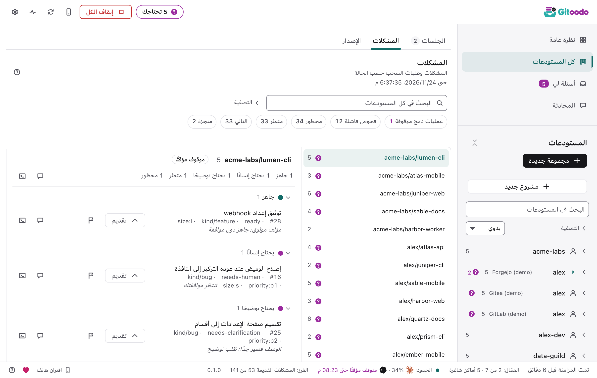

للمستخدمين · الاستخدام اليومي
كل المستودعات
في هذه الصفحة

كل المستودعات في مكان واحد: كل مشكلة مفتوحة مع حالتها ونقاطها والوكيل الذي يعمل عليها، موزّعة على صفحات فرعية. ويضيّق البحث والمرشّحات العرض إلى مستودعات أو حالات أو تسميات.
- يعرض جلسة الوكيل جلسة وكيل جارية في طرفية.
- يسلّم المناقشة في الدردشة المشكلة إلى المحادثة.
تعرض كل المستودعات كل مستودعاتك في مكان واحد وتنقسم إلى صفحات فرعية. في وضع المنسّق هي الجلسات والمشكلات والإصدار؛ وفي الوضع المباشر قيد العمل والمشكلات وطلبات الدمج. وليست النظرة العامة بإحصاءاتها واحدة منها: إنها الصفحة الرئيسية التي يفتح عليها التطبيق، ويعيدك إليها أول عنصر في التنقّل، نظرة عامة، وكذلك شعار Gitoodo في أعلى البداية. يتذكر Gitoodo الصفحة الفرعية التي استخدمتها آخر مرة ويفتحها من جديد، حتى بعد إعادة التشغيل. وإن أغلقت النافذة في عرض مستودع، يفتح التطبيق هناك من جديد. والنقر على أي مشكلة في أي مكان من كل المستودعات يفتح تفاصيلها: المستودع والحالة والتسميات والأولوية وما تعتمد عليه والمرحلة (milestone) ومن يعمل عليها، وإن كانت من الإصدار التالي فلماذا.
قيد العمل#
ما يحتاجك وما يتقدّم
في الوضع المباشر فقط: تعرض الصفحة ما يحتاج إليك: كم سؤالًا ينتظر في أسئلة لي، والعدّادات سؤال مفتوح ومحظور وCI فاشل وراكد (والنقر يصفّي القائمة في المشكلات)، والإنتاجية الأخيرة، ورابطًا إلى طلبات الدمج المفتوحة.
المشكلات#
المشكلات وطلبات السحب حسب الحالة
تعرض المرشحات السريعة فوق القائمة المهم بنقرة واحدة: عمليات دمج موقوفة وفحوص فاشلة ومحظور ومتعثر والتالي. يذكر كل منها عدده ولا يظهر إلا إذا وجد شيئًا؛ والنقرة الثانية تلغيه.
ينتهي كل مستودع بمجموعة منجزة مطوية: المشكلات المغلقة مؤخرًا، الأحدث أولًا، مع التاريخ و«غير مخطط لها» حيث تسجّل منصة الاستضافة ذلك، وطلب السحب الذي أغلقها. لا تُقرأ إلا عند فتحها؛ ويجلب تحميل المزيد الأقدم. يعرض المرشح السريع منجزة ما أُنجز هذا الأسبوع؛ ومع مع المنجزة يشمل البحث والتسميات المنجزة أيضًا.
يوقف إيقاف الكل كل شيء: لا عمل جديد ولا دمج. ويعيد الوكلاء العاملون مشكلاتهم إلى قائمة الانتظار.
تسرد المشكلات كل مشكلة وطلب دمج في مستودعاتك المفعّلة. في وضع المنسّق تُجمَّع حسب المستودع: البحث في كل المستودعات يجد العناصر بالنص، والتصفية تضيّق القائمة حسب المستودع أو الحالة أو التسمية، ومسح عوامل التصفية يعرض كل شيء من جديد. وفي النافذة الكبيرة تظهر القائمة وتفاصيل العنصر المحدد جنبًا إلى جنب.
فوق القائمة تعرض المرشحات السريعة بنقرة واحدة ما كانت له صفحات خاصة من قبل: عمليات دمج موقوفة (كل طلب دمج أوقفته أو اعترضت عليه، وبجانبه إطلاق)، وفحوص فاشلة، ومحظور، ومتعثر، والتالي. يذكر كل منها عدده ولا يظهر إلا إذا وجد شيئًا؛ ويُبقي المستودعات المختارة والبحث، والنقرة الثانية تلغيه.
في وضع المنسّق يحمل كل صف الإجراءات المناسبة لحالته: الطرفية لعامل قيد التشغيل؛ وإيقاف مؤقت (أو متابعة) وإعادة التشغيل وإلغاء لتوجيه عامل (يسألك الإلغاء وإعادة التشغيل أولًا)؛ وتقديم لنقل مشكلة جاهزة إلى مقدمة قائمة الانتظار؛ والتحكم في الدمج لحجز طلب دمج مشكلة قيد المراجعة أو الاعتراض عليه. وفي الوضع المباشر يبدّل التجميع حسب بين الحالة والمستودع والحساب والأرقام (جدول أعداد؛ انقر رقمًا لفتح القائمة المصفّاة) ويحتاج إليك.
طلبات السحب#
طلبات السحب المفتوحة مع الفحوص وحالة الدمج
في الوضع المباشر فقط: كل طلب دمج مفتوح في مستودعاتك، مجمّعًا حسب المستودع. يبيّن كلٌّ منها هل نجحت فحوصه أو فشلت (مع اسم أول فحص فاشل) أو هي قيد التشغيل أو مفقودة، وهل يمكن دمجه أو فيه تعارض، وأي مشكلات يغلقها. وتبرز طلبات الدمج التي تستحق نظرة، ويحصيها قيد العمل. والنقر يفتح طلب الدمج على منصة الشيفرة.
الإصدار#
الإصدار هدف واحد لكل مستودع: ما المشكلات التي يجب أن تدخل قبل أن تنشر. يعمل Gitoodo على مشكلات الإصدار أولًا.
الإصدار هدف واحد لكل مستودع: ما المشكلات التي يجب أن تكتمل قبل أن تنشر. يعمل الطيار الآلي عليها أولًا، ومعها كل ما تعتمد عليه. وعلى المنصة يكون الإصدار معلمًا عنوانه رقم إصدار؛ وإن لم يوجد، تجمع التسمية release:next الإصدار التالي.
تُظهر حالة الإصدار في كل مستودع إلى أي مدى بلغ الإصدار التالي لكل مستودع وما الذي لا يزال مفتوحًا فيه. وينسخ نسخ الملخص خطة الإصدار نصًّا؛ ومع إرفاق رابط إلى Gitoodo تنتهي برابط إلى Gitoodo.
الجلسات#
كل الجلسات الجارية في كل المستودعات مباشرةً، وبجانبها قائمة الانتظار
تعرض كل بطاقة طرفيّة أحد العمّال مصغّرةً ومباشرةً. عند فتحها بحجم كبير تتبع الطرفيّة المخرجات الجديدة؛ وإذا مرّرت إلى الأعلى تتوقف، و«الانتقال إلى الأحدث» يعيدك إلى الأسفل. انقر داخل الطرفيّة لتكتب فيها مباشرةً: كل المفاتيح، بما فيها Esc وTab وCtrl-C، تذهب إلى الوكيل، ولا شيء إلى المنصّة. النسخ: ⌘C على macOS؛ وعلى Windows وLinux Ctrl-C مع نص محدّد أو Ctrl-Shift-C. النقر خارجها أو Shift-Esc يغادر الطرفيّة. ما يُعرض يمرّ بالحجب نفسه الذي تمرّ به السجلات، فلا تظهر الرموز المعروفة أبدًا.
العامل جلسة برمجة بالذكاء الاصطناعي بدأها Gitoodo لمشكلة ما وتعمل الآن. لا تُحسب هنا وفي الرقم على التبويب إلا هذه الجلسات. وسم «قيد التنفيذ» وحده ليس عملًا. في «النشاط» تجد ما كتبه العمّال والموزِّع في المستودع البعيد.
تكون المشكلة بلا عامل حين تحمل «قيد التنفيذ» ولا يعمل لها أي عامل، مثلًا لأن الموزِّع أُوقف أو أُوقف مستودع مؤقتًا بينما كان العمّال يعملون. إن كان عامل يعمل على جهاز آخر معروف، يُذكر ذلك الجهاز. يفحص الموزِّع كل دقيقة ويعيد بنفسه إلى «جاهزة» كل مشكلة تبقى بلا عامل خمس دقائق؛ لا يلزمك فعل شيء، لذا لا يظهر هنا إلا ما لا يعيده بنفسه. «إعادة التعيين» تفعل ذلك فورًا. المشكلات التي يعمل لها عامل فعلًا لا تُمسّ.
تعرض الجلسات الجلسات الجارية في كل مستودع بطاقاتٍ مباشرة تصغر كلما زاد عددها؛ والنقر يكبّر إحداها على العرض الكامل. وبجانبها قائمة الانتظار: المشكلات الجاهزة في كل مستودع بالترتيب الذي يأخذها به الطيار الآلي، كلٌّ مع مستودعها ورقمها. ويعرض عرض المستودع الشيء نفسه لمستودع واحد.
في البطاقة المكبّرة تملأ الطرفيّة العرض، وهي وحدها تُمرَّر. تتبع المخرجات الجديدة؛ وإذا مرّرت إلى الأعلى تتوقف، والانتقال إلى الأحدث يعيدك إلى الأسفل. انقر داخل الطرفيّة لتكتب مباشرةً في سطر إدخال الوكيل: كل المفاتيح، بما فيها Esc وTab وCtrl-C، تذهب إلى الوكيل، ولا شيء إلى منصة الشيفرة. النسخ: ⌘C على macOS (وهناك يذهب Ctrl-C إلى الوكيل)، وعلى Windows وLinux Ctrl-C مع نص محدّد أو Ctrl-Shift-C. النقر خارجها أو Shift-Esc يغادر الطرفيّة؛ وخارجها يعيدك Esc إلى كل الجلسات. تنتظر تعليمات Gitoodo ما دام في الطرفيّة إدخال غير مكتمل: أرسله أو احذفه.
الجلسة (العامل) هي جلسة برمجة بالذكاء الاصطناعي بدأها Gitoodo لمشكلة وهي تعمل الآن، على هذا الجهاز أو على جهاز عمل مسمّى في الصف. لا يُحتسب في هذه الصفحة وفي الرقم على التبويب إلا العمّال. ويسرد على أجهزة أخرى المشكلات التي يحتفظ بها جهاز آخر معروف بالاسم بحجز ما زال ساريًا. وتحصي بطاقة خانات العمّال في النظرة العامة العمّال أنفسهم. وإجراءات الصف هي نفسها تحت المشكلات: تفتح الطرفية الطرفية المباشرة (macOS وLinux) ويترك فصل الطرفية بينما يواصل العامل عمله؛ ويوقف إيقاف مؤقت الوكيل بلطف: ينهي الخطوة التي هو فيها وينتظر، وتقول البطاقة «متوقف مؤقتًا»، ولا يعيد Gitoodo تشغيله في هذه الأثناء على أنه عالق؛ ويدعه متابعة يواصل. ويضع إعادة التشغيل وكيلًا جديدًا على المشكلة نفسها في worktree نفسه، ويُنهي إلغاء الجلسة ويعيد المشكلة إلى قائمة الانتظار. وتحمل البطاقة المكبّرة في عرض المستودع الأزرار نفسها.
بلا عامل هي المشكلات التي ما زالت تحمل «قيد التنفيذ» لكن لا يعمل لها عامل، مثلًا لأن الموزِّع أُوقف بينما العمّال يعملون. يذكر كل صف السبب: بلا حجز أو انتهى الحجز أو انتهى العامل (أخذها موزِّع هذا الجهاز) أو حجز بلا جهاز معروف. لا تشغل هذه المشكلات مكان عامل ولا تعطّل شيئًا، لكنها لا تعود إلى قائمة الانتظار من تلقاء نفسها. وعند بدء الموزِّع التالي يحرّر مشكلات عمّاله المنتهين. واختر الباقي واحدة واحدة، أو لكل مستودع أو كلها دفعة واحدة، ثم أعد تعيينها إلى «جاهزة» بعد تأكيد. يقرأ Gitoodo كل مشكلة من جديد لهذا الغرض ويتركها كما هي إن كان عامل يعمل لها.